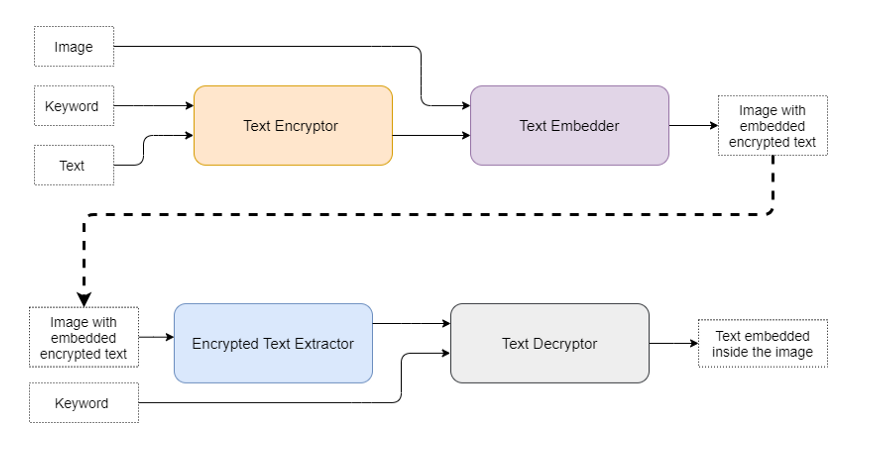

This is an application of Steganography. Steganography is the practice of concealing a file, message, image, or video within another file, message, image, or video. Steganography is concerned both with concealing the fact that a secret message is being sent and its contents while cryptography is the practice of protecting the contents of a message alone.
The advantage of steganography over cryptography alone is that the intended secret message does not attract attention to itself as an object of scrutiny. Plainly visible encrypted messages, no matter how unbreakable they are, arouse interest.
Source: Wikipedia
We get an image, a keyword and a message from the user. The message is encrypted with the help of the user-provided keyword by using Vigenere's cipher.
Certain binary data in the image is modified to represent the encrypted message. The image looks perfectly normal to the human eye even after embedding the message in the image.
The following image shows the process flow
When someone wants to access the message, he/she has to provide the image and the keyword. The encrypted message is extracted from the image and then decrypted using the keyword.